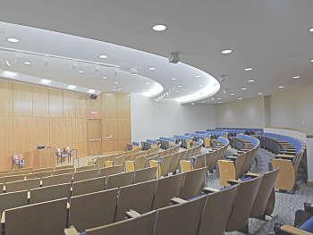

Actividad docente
Universidad Nacional de Educación a Distancia UNED. Desde 2012-hoy
Profesor del máster de acceso a la profesión de procurador de los tribunales
Universidad Complutense de Madrid. Escuela Práctica Jurídica. Desde 2008-hoy
Profesor del curso de especialización de procurador de los tribunales
Instituto Superior de Derecho y Economía ISDE. Desde 2012-hoy
Profesor del máster en perfeccionamiento de habilidades de la abogacía
Centro de formación del Colegio de Procuradores de Madrid. Desde 2013-hoy
Profesor del curso para la obtención de la capacitación de oficial habilitado de procurador
Centro de Estudios Jurídicos. 19.09.2014
“Los actos de comunicación realizados por Procurador” en el marco de la Jornada: "Reformas legislativas en las funciones de colaboración del Procurador con la Administración de Justicia, y en particular, con el Secretario Judicial”
Universidad Nacional de Educación a distancia UNED. 25.05.2012 y 15.06.2012
“Contenido de las prácticas profesionales y timing”, en sendos cursos de formación de profesores tutores para al master de acceso a la procura organizadas por la Escuela de Práctica Jurídica de la Facultad de Derecho de la UNED
Universidad de Santiago de Compostela. 15.09.2012
“Las prácticas externas” en el curso de formación de Procuradores para el Master Interuniversitario en Procuraduría organizado por la Escuela de Práctica Jurídica de la Universidad de Santiago
Escuela Judicial del Consejo General del Poder Judicial. 28.04.2011
“Las reformas legales relativas a los actos de comunicación: el sistema Lexnet y la práctica de notificaciones por los Procuradores”, en la actividad “Cuestiones procesales derivadas de la reforma operada por la Ley 13/2009 de 3 de noviembre, de reforma de la legislación procesal para la implantación de la nueva oficina judicial” organizada por el Servicio de formación continua del Consejo General del Poder Judicial
Instituto Madrileño de Administración Pública de la Comunidad de Madrid IMAP. 2006-2010
Profesor en los cursos “Medidas para la agilización de los procedimientos civiles: juicios rápidos civiles y nuevo procedimiento monitorio” y “Medidas para la agilización de los procedimientos civiles: juicios rápidos civiles y nuevo procedimiento monitorio” dirigidos a funcionarios de la Administración de Justicia